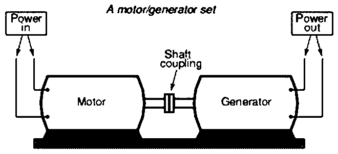

Motor Generator Set
Motor generator set are also used to convert voltage, phase and frequency of power. They also find application in isolation of electrical loads from the supply line. Here is a pictorial representation of a MG set. Here a motor and a generator are coupled together using a single shaft; they are wound around a single rotor. Necessary condition for coupling is that rated speed of both motor and generator should be same.
The diagram of a motor generator set is shown below,

Working Principle: From the above diagram we can see that in a typical motor generator set, the power is given externally to a motor and as a result the shaft of the motor rotates the rotor of the generator. That means, motor receives electrical energy input from the supply line. Its shaft rotates and since the generator shaft is mechanically coupled with it, the generator also receives its mechanical input through shaft. Thus generator also creates electrical output power or in other words generator converts the mechanical energy into electrical energy.
Thus while the power at the input as well as output side is electrical in nature, the power flowing between the machines is in form of mechanical torque. This provides isolation of the electrical system as well as some buffering of power between the two electrical systems.
Conversions
The motor generator set can be used for conversions of electrical power in various forms
- AC to DC – This is possible by using a AC motor (induction motor or synchronous motor) and a DC generator.
- DC to AC – This can be accomplished by using a DC motor and an AC generator.
- DC at some voltage level to DC at another voltage level.
- Alternating power at one frequency to Alternating power at another frequency
- Fixed AC voltage to variable or regulated AC voltage
- Single phase AC voltage to 3 phase AC voltage
Now days motor generator sets have been upgraded in many ways. Earlier these were used in the places where speed regulation is required highly like elevators, factories etc. Now day’s semiconductor devices are working as the motor generator set i.e. with the introduction of power semiconductors devices like thyristor or SCR?">thyristor, GTO, MOSFET etc. motor generator set are replaced by them. These conversions of power from one form to another can be brought about very easily. They are small and compact in size, losses are less and control is very easy.
 by
by {kind=link}
{kind=link}